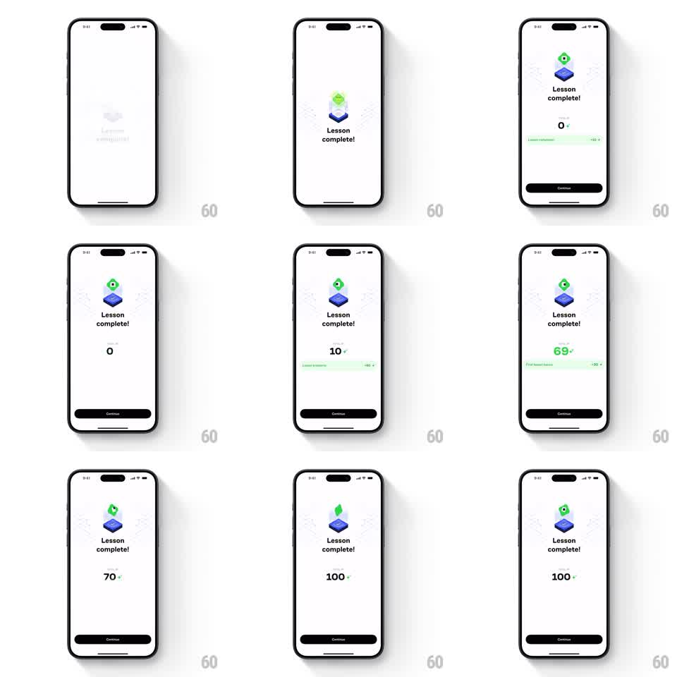

Media
Frame-by-frame

Rebuild this animation 1:1: Brilliant's lesson-complete tally - the mascot pops onto its platform, then XP stat rows slide in one at a time while the total counter ticks up to 100.

Rebuild this animation 1:1: Brilliant's lesson-complete tally - the mascot pops onto its platform, then XP stat rows slide in one at a time while the total counter ticks up to 100.
## Integration
Integration: stack-agnostic spec - springs given as stiffness/damping, timed motions as duration + curve; map every value to your framework and animation library of choice.
## Scene
White reward screen: the green cube mascot on a blue platform under a glow, "Lesson complete!" headline, a "TOTAL XP" counter, green stat rows ("Lesson complete +80", "First lesson bonus +20") sliding in as chips, and a dark Continue button.
## Motion spec
Pattern: sequenced tally, ~2.5s.
- The mascot drops onto its platform with a squash (spring stiffness 380 damping 12), its glow blooming behind it.
- "Lesson complete!" fades up (250ms) and the counter appears at 0.
- The first stat chip slides in from the right (300ms, ease-out) and its value merges into the counter, which ticks up (0 to 80, 500ms, ease-out) as the chip settles.
- The second chip slides in on the same motion 400ms later; the counter resumes ticking to 100 (400ms).
- With each counter milestone the mascot does a small happy bounce (translateY -8px and back, spring stiffness 420 damping 14).
- The Continue button rises and settles last (spring stiffness 300 damping 20).
## Calibration
- Chips and counter are causally linked: a chip lands, then the counter ticks - never simultaneously.
- The tick is fast and eased, not linear odometer digits.
## Reduced motion
All elements fade in with the counter at its final value.
## Don't miss
- The counter label is "TOTAL XP" in small caps over the number.
- The chips are tinted green with their values prefixed by +.